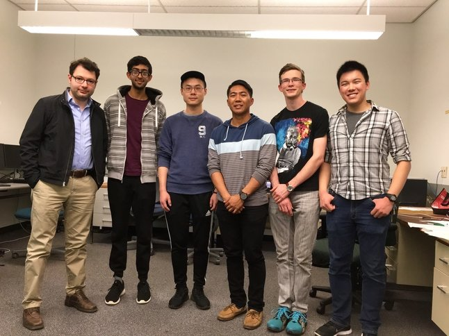
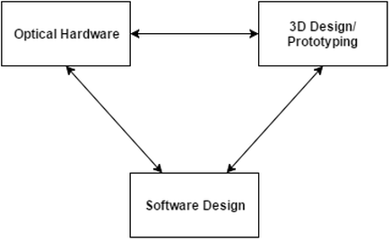

Welcome to SPFyMicro
Professor Ali Yanik and his research team at the University of California,
Santa Cruz is in need of a relatively low cost, compact, fluorescence imaging platform to aid in their research.
This project intends to fulfill that need through researching and designing a portable fluorescence microscopy platform for their applications.
Moreover, this project is sponsored/funded by Professor Ali Yanik and his research group,
who will work with the team members to ensure the success of the project.

Project and Design Approach

This project can be divided into three codependent sections: optical hardware design, 3D prototyping and hardware integration, and software development.
Each team member will work independently to complete their individual objectives as well as with other sections to aid in the integration of each project element.
Optical Hardware
The basis of design for the Optics behind the Project was derived from the operation of a commercial Fluorescence microscope.
We prioritized portability while keeping in mind affordability and usability in designing our very own Fluorescence microscope.
We did this by using the lens system of the camera on an iPhone and adding our own optical system.
The iPhone itself reduces the need for numerous things that are found on the Commercial version that includes the bulky observation tubes, the digital cameras, and the control motherboards.
With that, we were left to focus on the actual fluorescence and imaging of the fluorospheres as an Optical team.
Throughout this past quarter, this has required extensive research on key optical components, steady testing of the imaging process,
and most importantly constant collaboration with the Software/Mechanical teams.
Mechanical Design
The mechanical design of the microscopy platform evolved over the course of the project as the optical design varied.
However, the core objectives remained the same: provide fine resolution control over position of the various optical elements,
provide an enclosure to derate laser light to class 1 safety standard via containment, allow interchangeability of optical elements and test substrates in a single form factor.
Some elements of these objectives were earmarked as stretch goals but implementation was planned from the start of the project.
Since design constraints were dynamically changing, iterative design was key to the development of the mechanical microscopy platform.
Optical and mechanical design are intimately connected so there was extensive overlap between team members to develop appropriate design solutions.
Application and UI development
The software portion of the microscopy platform is the main way users are to interact with the SPFy Micro device.
The software allows users to capture, process, and analyze images from the microscope.
Furthermore, since the device requires the iPhone to be upside down during operation,
the functionality can be controlled remotely from another nearby iOS device (given that both devices are on the same local network).
While providing these features, the software aims to be clean and intuitive, with a minimal to no learning curve.